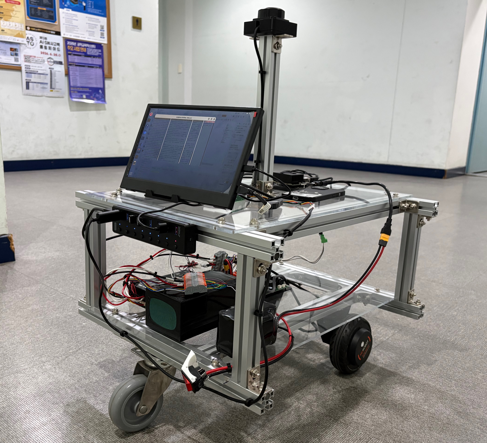
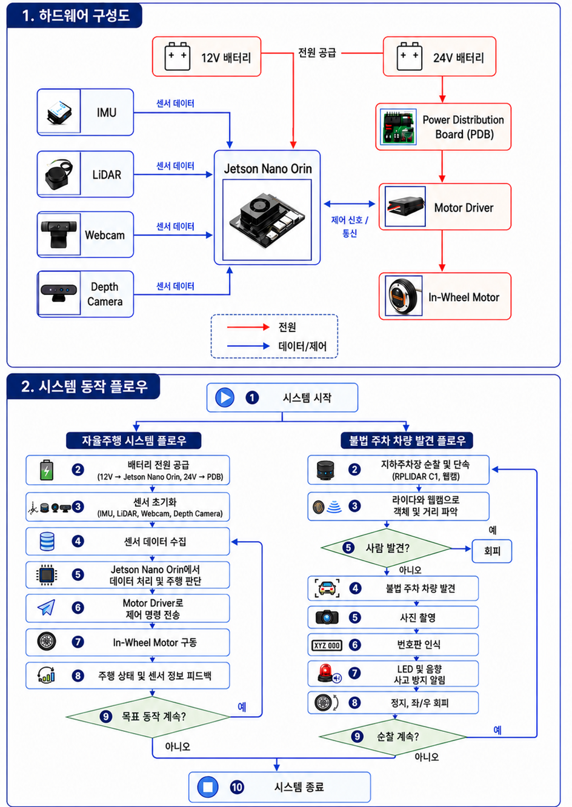
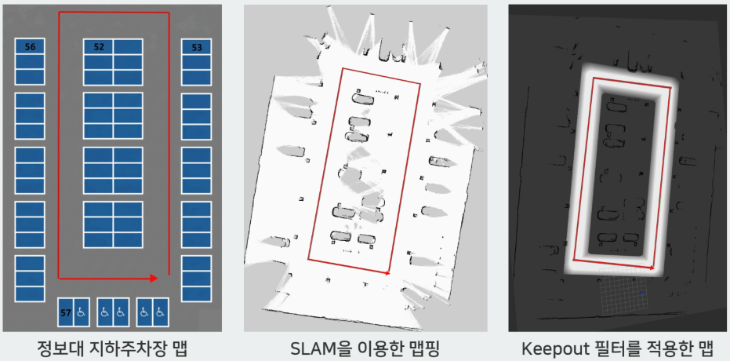
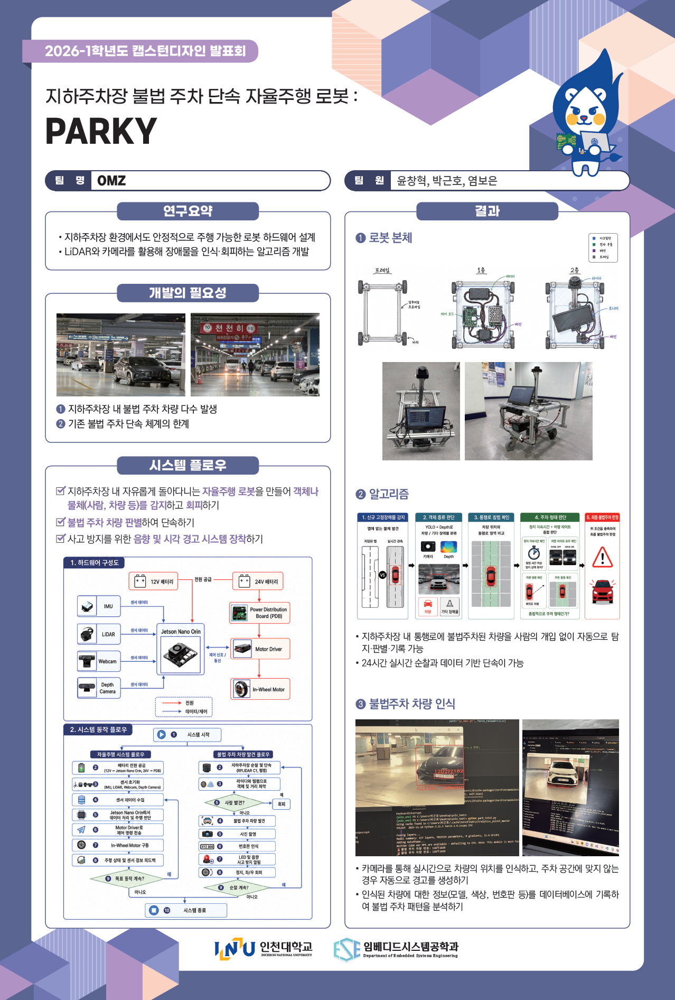

{kind=link}
이동
LiDAR 지도와 위치 추정을 바탕으로 경로를 계획하고, 차동 구동 플랫폼을 제어합니다.
ROBOTICS / CAPSTONE DESIGN
주차장을 순찰하고, 통행로를 살피고,
차량을 인식하는 자율주행 로봇.


01 / OVERVIEW
지하주차장에서는 통행로를 가로막는 차량을 지속적으로 살피기 어렵습니다. PARKY는 주차장을 이동하며 사람과 차량을 구분하고, 차량 위치를 지도상의 통행로와 비교하는 로봇을 목표로 시작했습니다.
LiDAR 지도와 위치 추정을 바탕으로 경로를 계획하고, 차동 구동 플랫폼을 제어합니다.
RGB 영상의 객체 검출과 깊이 정보를 연결해 사람·차량의 종류와 거리를 파악합니다.
차량의 지도상 위치와 통행로 점유 시간을 확인하고, 번호판 인식 및 차량 기록 모듈을 구성합니다.
TECHNICAL DOCUMENTATION
공개 워크스페이스의 코드·설정과 발표 자료를 바탕으로 정리했습니다.
02 / HARDWARE
발표 구성도는 Jetson Orin 계열 연산 장치에 IMU, LiDAR, 웹캠, 깊이 카메라를 연결하는 구조입니다. 12V 배터리는 연산부에, 24V 배터리는 전력 분배 보드(PDB)를 거쳐 모터 드라이버와 인휠 모터에 전원을 공급하도록 설계했습니다.

실행 진입점인 robot_bringup.launch.py는 모터, LiDAR, IMU, 카메라를 옵션으로 켜고 끕니다. 확인한 기본 설정에서는 모터와 LiDAR가 켜져 있고 IMU와 카메라는 꺼져 있습니다. 따라서 하드웨어 구성도만으로 모든 센서가 항상 함께 동작하거나 융합된다고 보지는 않았습니다.
04 / KEEPOUT FILTER

변경된 이미지는 정보대 지하주차장 배치도, SLAM으로 작성한 지도, Keepout Filter를 적용한 지도를 차례로 보여줍니다. 빨간 선은 주차 구획 주변을 도는 경로를 나타내며, 오른쪽 화면에서는 통로와 그 주변 영역의 구분을 확인할 수 있습니다.
SLAM 지도가 벽과 장애물의 위치를 표현한다면, keepout_filter는 로봇이 진입하지 않아야 할 영역을 별도 마스크로 지정합니다. 주차 구획을 가로지르는 경로를 제한하고 통로를 따라 이동하도록 경로 계획의 범위를 정합니다.
PARKY의 Nav2 설정은 전역·지역 costmap 모두에 nav2_costmap_2d::KeepoutFilter를 활성화하고 /costmap_filter_info를 참조합니다. 따라서 전역 경로를 만들 때와 지역 경로를 따라갈 때 모두 금지 영역을 반영합니다. 마스크의 지도 원점·해상도와 map → odom 좌표 변환이 일치해야 합니다.
불법주차 판정 노드는 같은 마스크 파일을 별도로 읽고, 차량의 지도 좌표가 흰색 통행로 영역에 해당하는지 검사합니다. Nav2의 진입 제한과 차량의 통행로 점유 판정은 각각의 처리이며, 이미지의 색상만으로 두 로직을 동일하게 해석하지 않습니다.
05 / PERCEPTION
yolo_object_detection은 사람과 차량을 검출하고, 검출 박스 중심 주변의 깊이를 샘플링하는 구성을 제공합니다. 객체별 거리 depth_m, 검출 영상, 3D 마커를 ROS 2 토픽으로 확인할 수 있습니다.
불법주차 판정 노드는 TCP로 받은 차량 ID와 3D 위치를 TF2로 map 좌표로 변환합니다. 지도 원점과 해상도를 이용해 마스크 픽셀을 구하고, 흰색 통행로 영역에 해당하는지 검사합니다.
영역을 벗어나면 타이머와 알림 상태를 초기화하고, 입력에서 사라진 ID는 추적 목록에서 삭제합니다. 이 조건은 프로젝트의 점유 판정 규칙이며 차량 속도를 직접 계산하는 정차 판별은 아닙니다.
별도 차량 관리 앱은 YOLO로 번호판 영역을 찾고 EasyOCR로 문자를 읽습니다. 영역 여백 제거, 확대와 회색조 변환, 문자 교정 및 한국 번호판 형식 검사를 수행합니다. FastAPI의 입차·출차·검증 API와 SQLite를 이용해 차량 상태와 OCR 로그를 다룹니다.
번호판 스크립트에는 3회 인식 확인을 위한 상수가 있지만, 확인한 실행 코드에서는 연속 확인 로직에 사용되지 않습니다. 현재 동작은 형식과 신뢰도를 통과한 번호판을 중복 전송하지 않는 방식입니다.
vehicle_face는 정지·주행·장애물·단속의 네 상태를 디스플레이로 표현합니다. /emotion_state로 표정을 전달하고, /enforce_mode로 단속 상태를 입력하는 구조입니다.
06 / ENGINEERING NOTES
이동량이 작으면 위치 갱신과 진행 확인이 늦어집니다. 저장소는 AMCL 갱신 거리, DWB 속도 제한, 진행 확인 조건을 저속 플랫폼에 맞게 조정하고, 불필요한 회전을 줄이는 행동 트리를 사용합니다.
카메라 검출과 지도 마스크를 비교하려면 TF와 지도 원점·해상도가 일치해야 합니다. 판정 노드는 좌표 변환에 실패한 차량을 건너뛰며, 변환 실패를 곧바로 불법주차로 처리하지 않습니다.
발표 자료의 차량 방향·라이트를 이용한 주차 상태 판단, LED·음향 알림, 24시간 순찰은 전체 시스템의 목표입니다. 확인한 코드로 설명할 수 있는 범위는 지도 기반 주행 설정, 객체·깊이 인식, 통행로 점유 판정, 번호판 기록 및 표정 표시 모듈입니다. 장시간 운용 성능이나 전체 모듈의 통합 검증 결과는 별도 측정 자료가 필요합니다.
07 / REFERENCES

기술 내용은 omz_ws 커밋 4fed3f4를 기준으로 정리했습니다. 하드웨어 설계와 프로젝트 배경은 팀 발표 자료를 참고했습니다.
{kind=link}
{kind=link}
{kind=link}
{kind=link}